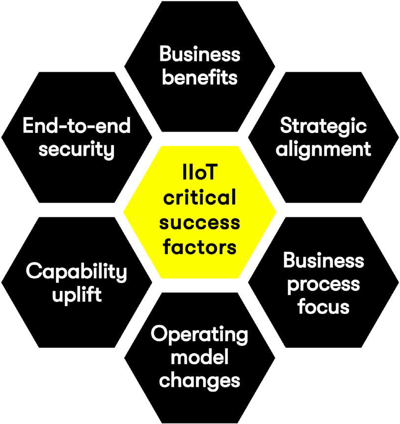

As manufacturers digitally transform their value chains,
connected devices will play a major role.
Getting it right
requires a laser focus on six key areas.
The internet of things (IoT) connects physical machines and equipment
in a factory
to the digital world of cloud, data analytics and artificial intelligence (AI). It enables
you to collect more data,
analyze the information quickly and make better business
decisions.
Forward-thinking manufacturers already know they need to bring IT closer to
operational technologies that control machines and equipment. Traditionally, these
technologies were managed by separate departments in relative isolation.
Leaders,
such as food and beverage giant Lion, have merged the teams to create a single
integrated technology function to leverage synergies.
The next step is to harness technology to optimize the business and drive innovation.
Industry 4.0 advances in manufacturing are setting the standard for creating the
smart factory and supply chain of the future using industrial IoT (IIoT), analytics,
cloud computing and cyber physical systems.
Manufacturers can now consider
business model innovation and new revenue streams as they leverage the deluge of
IoT data.
This is often called the servitization of the industry.
The importance of Industry 4.0 and the IIoT is well understood, but how do you start
implementing these concepts to maximize your chances of creating real value?
There are six critical success factors organizations need to consider to successfully use IIoT in their digital transformation initiatives (Figure 1).
Early discussions about IIoT primarily focused on the technology and what it could do, rather than on the business value IIoT could deliver. This is not surprising; IoT technologies’ cool factor has clearly captured people’s attention. More recently, the conversations have shifted to the variety of business benefits IIoT can deliver.
Companies can create new products and services to generate additional revenue streams. Machines with IIoT sensors can gather huge amounts of data, and advanced analytics can transform it into “smart data” – that is, digital information that is formatted so that it can be acted upon at the collection point before being sent to a downstream analytics platform. Smart data can support decision making or can trigger actions automatically, and this value can be monetized. One of the most popular use cases is predictive maintenance of factory assets. If the organization servicing the assets is able to predict equipment failure, it can offer the predictions as an additional paid service.
“The disruptive potential of IoT resides in its ability to turn businesses inside-out, transform products into services, transform services into learning architectures and make us completely rethink what the organization of the future may look like.” – John Seely Brown, Independent Co-Chairman, Deloitte LLP Center for the Edge
IIoT can help make products and services more attractive. IIoT-enabled parts, for example, are easier to find in a warehouse when used in conjunction with an indoor navigation system that can lead warehouse staff directly to their location. A smart product can determine when service levels are being exceeded or when it’s time for a maintenance check, potentially preventing a breakdown. The data generated by smart products also can be used to improve the service experience in the after-sales market by learning about customer usage and preferences.
Sensors and actuators can closely monitor the manufacturing process and products as they travel through a factory, enabling real-time control of the production system. While control systems have monitored factories for decades, it is now possible to make those systems more intelligent by feeding IIoT and business data into smart algorithms. In supply chain operations, sensors and IIoT devices can track and trace products on their way from the factory to the customer, anywhere in the world.
 Environmental stewardship
Environmental stewardshipTraditionally, lower cost and higher revenue have been the only measurements of success for manufacturers, but today they are also being measured on corporate social responsibility. This means that the environmental impact of the production process and the products in use are areas of value creation. Examples of value include energy savings that result in a lower carbon footprint as well as the monitoring of air, soil and water quality. IIoT also can help monitor the environment, triggering alerts and even shutting down operations if required.
Risks are commonplace. Managing the risks effectively avoids the human tragedy and financial loss associated with accidents. IIoT sensors can be used to monitor the immediate environment around a worker, but can also measure a person’s vitals, such as heart rate, fatigue or stress. Knowing where an employee is located — together with health data, defined operational limits and data analytics — can help detect risks and issues in the work environment.
In many cases, manual inspections can be replaced by IIoT technologies. For fixed assets in a manufacturing plant, this can be achieved through sensors and through autonomous vehicles with sensors, cameras, microphones and other technology needed to perform inspections. In larger facilities, drones can inspect the outside areas. Inspectors responsible for compliance can use IIoT systems to increase the inspection frequency and therefore detect compliance issues early on.
“The Internet of Things will transform business processes into IoTenabled business processes, where things and humans collaborate. We will witness an increased autonomy of smart things that will be able to navigate their own ways through our factories, distribution centres and supply chains, analysing contextsensitive multiple data points to drive highly individualised business processes.” – Michael Rosemann Executive Director Corporate Engagement, QUT
Some organizations have set up digital innovation labs without clear strategic direction or technology roadmaps, and the result is often proofs of concept that don’t have value for the business or are not supported by their technology functions. For IIoT to have a positive impact on the organization, it needs to be aligned with the overall business and technology strategy. The business strategy provides guidance on goals and objectives, while the technology strategy identifies constraints around technology choices. The best way to ensure strategic alignment is to create an IoT strategy that considers current strategies and also drives changes to those strategies. For example, if IIoT provides a new way to ensure the health and safety of factory workers, the human resources strategy should consider this. Strategic alignment is key, but it is not a one-way street.
The discussion around IIoT is dominated by data analytics, machine learning and AI. Business processes may not be the most exciting topic, but they are still the core of any organization and define how the business operating model is structured. An emerging focus in the manufacturing industry is the integration of IIoT solutions into business processes. In an IoT report, McKinsey notes that the missing integration of IoT solutions into existing business workflows is a top IoT capability gap.1 IIoT software vendors may claim their products integrate with business systems, but simply passing data to a business system is not the same as creating an end-to-end business process. Using that process, organizations will have an increased number of smart things in their factory, increased levels of automation and more complex supply chains. The expectation is to make everything work together effectively in a way that is dramatically better than today.
With changes to the technology landscape and operating model, employees need to learn new skills as their roles change. It is important that people understand IIoT and Industry 4.0 concepts from both a business and technology perspective, establishing a common language to minimize the risk of misunderstanding. For the next level of detailed understanding of IIoT, focused programs that advance employees’ capabilities need to be developed. In these programs, active participation of the partner ecosystem, or value network, should be considered. A common learning experience can improve and drive day-to-day collaboration. Consider how educational and training programs can affect certain roles in a manufacturing company and close skills gaps. Chief operating officers can get new insights into the operation of the business, but they will want to understand what the new data is and how to incorporate it into their decision making. Chief technology officers will be flooded with new technologies and will want to select the ones relevant for the business. They will want to learn about functionalities provided by IIoT gateways, low-power WAN, sensor boards and IoT platforms. Maintenance technicians will want to understand why predictive maintenance is important, and how IIoT and data analytics will enable them to be more proactive with maintenance inspection activities.
In the past, manipulating machines in a factory typically required physical access to the facility, but by linking assets to the internet and deploying IIoT capabilities, facilities are now exposed to new security risks. New approaches for cyber-physical systems are being developed that include authentication and encryption capabilities built into hardware, real-time analytics of network traffic, and IIoT gateways that serve as protective shields for factory equipment, similar to the way firewalls perform in IT networks. With the convergence of IT and operational technology, “security by design” is becoming a key decision criterion as companies choose technologies.
Industrial IoT is not a single solution that is implemented by one big project. It is a journey along a maturity curve that needs to be planned strategically using the six critical success factors: business value, strategic alignment, business process focus, operating model changes, capability uplift, and end-to-end security. DXC can help organizations along the journey with our industry insights and deep technology expertise. We leverage capabilities and experiences from around the globe to customize our solutions to the needs of our clients.
Peter Klement is chief technologist for manufacturing in DXC Technology’s Digital Transformation Consulting, with a focus on Industry 4.0 and industrial IoT. His mission is to help organizations strategically transform their businesses with the help of digital technologies such as IoT, data analytics and cloud. Peter looks at new technologies from the perspective of business benefits and how they can optimize operating models and foster business model innovation.